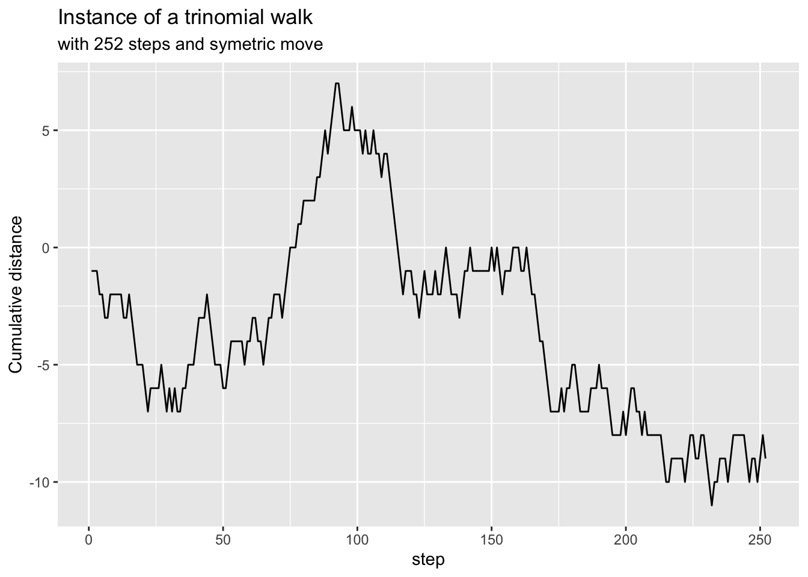

library(tibble) # tibble()
library(dplyr) # mutate()
library(ggplot2) # ggplot()Setting up the stage
A discrete random variable (DRV) \(y\) can either go up with a probability of \(\alpha\) or down with a probability of \(\alpha\) or stay the same with a probability of \(1 - 2\alpha\).
flowchart RL y' -- alpha --> 'y'+delta_y y' -- 1 - 2*alpha --> y y' -- alpha --> y'-delta_y
We call that a trinomial walk.
alpha <- 0.3
#let's do a 100 steps trinomial walk.
num_steps <- 252
prob <- runif(num_steps)
df <- tibble(step = 1:num_steps, prob = prob) |>
mutate(direction = if_else(prob < alpha, -1, if_else(prob > (1 - alpha), 1, 0)),
cum_walk = cumsum(direction))
ggplot(df, aes(x = step, y = cum_walk)) +
geom_line()
This is just one instance of a trinomial walk. In reality, we are interested in getting to know the probabilistic properties of the \(y\) variable.
Deriving the Forward equation
\[Prob(a<y'<b \text{ at time t' } | \text{ y at time t}) = \int_a^b p(y, t; y', t') dy' \tag{1}\]
This (Equation 1) means: What is the probability that the random variable y’ lies between a and b at time t’ given it was at y at time t? In this case (y, t) are given, they are constant, they are known; while (y’, t’) are the variables.
We re-write this (Equation 1) for conciseness as \(P(y, t; y', t')\).
Hence, another way to write (Equation 1) is \[P(y, t; y', t') = \alpha \cdot P(y, t; y'+\delta y, t'-\delta t) + (1-2\alpha) P(y, t; y', t'-\delta t) + \alpha \cdot P(y, t; y'-\delta y, t' - \delta t) \tag{2}\]
Each terms in the sum of (Equation 2) could be evaluated using a Taylor Series Expansion. Note that \(\delta t^2 << \delta t\) as \(\delta t\) is already quite small.
\[P(y, t; y' + \delta y, t'-\delta t) \approx P(y,t;y',t') + \delta y \frac{\partial P}{\partial y'} - \delta t \frac{\partial P}{\partial t'} + \frac{1}{2} \delta y^2 \frac{\partial^2 P}{\partial y'^2} + \dots\] \[P(y, t; y', t'-\delta t) \approx P(y,t;y',t') - \delta t \frac{\partial P}{\partial t'} + \dots\]
\[P(y, t; y'- \delta y, t'-\delta t) \approx P(y,t;y',t') - \delta y \frac{\partial P}{\partial y'} - \delta t \frac{\partial P}{\partial t'} + \frac{1}{2} \delta y^2 \frac{\partial^2 P}{\partial y'^2} + \dots\]
We have ignored all the terms less than \(\delta t\).
Adding the 3 equations above with their coefficients, we end up with
\[\delta t \frac{\partial P}{\partial t'} = \alpha \delta y^2 \frac{\partial^2 P}{\partial y'^2}\] \[\frac{\partial P}{\partial t'} = \alpha \frac{\delta y^2}{\delta t} \frac{\partial^2 P}{\partial y'^2}\]
Note how \(\alpha\), \(\delta t\) and \(\delta y\) are all positive values. Hence, we can let \(C^2 = \alpha \frac{\delta y^2}{\delta t}\), and we get: \[\frac{\partial P}{\partial t'} = C^2 \frac{\partial^2 P}{\partial y'^2} \tag{3}\]
This last (Equation 3) can be recognized as the Forward Kolmogorov Equation or Heat-diffusion equation or also Fokker-Plank equation.
Note that:
- This is a PDE for p with 2 independent variables \(y'\) and \(t'\)
- \(y\) and \(t\) are like parameters. They are fixed, they are starting point
- This should model a random-walk that is finite in a finite time.
Solving the FKE (by similarity reduction)
To solve this PDE, we solve it by (as per the CQF) similarity reduction. We use a solution of the form \[P = t'^a f \left( \frac{y'}{t'^b} \right) \space a, b \in \mathbb{R}\]
Letting \(\xi = \frac{y'}{t'^b}\), we are looking for a solution of the form \[P = t'^a f(\xi) \]
Finding the partial derivatives based on the above solution’s form.
\[\frac{\partial P}{\partial y'} = t'^a \cdot \frac{df}{d \xi} \cdot \frac{\partial \xi}{\partial y'}\] Note how f is just a function of \(\xi\) while \(\xi\) is a function of both \(y'\) and \(t'\); hence the difference in notation for the derivatives.
Since \(\frac{\partial \xi}{\partial y'} = t'^{-b}\), we have \[\frac{\partial P}{\partial y'} = t'^{a-b} \cdot \frac{df}{d \xi} \]
Also, \(\frac{\partial \xi}{\partial t'} = -b \cdot y' \cdot t'^{-b-1}\). Using product rule to find \(\frac{\partial P}{\partial t'}\), we get: \[\frac{\partial P}{\partial t'} = a t'^{a-1} f(\xi) + t'^a \frac{df}{d \xi} \frac{\partial \xi}{\partial t'} = a \cdot t'^{a-1} \cdot f(\xi) - b \cdot t'^{a-b-1} \cdot y' \cdot \frac{df}{d \xi} \]